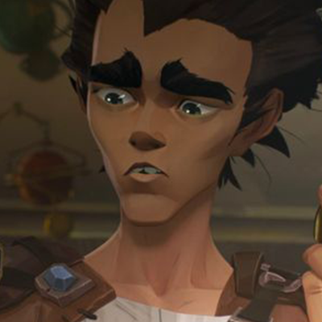

charactor
-
- VI
- As a child, he loses his parents to the executioners in the war between Piltover and the Underground City and is orphaned with his younger brother Powder, so he takes extra care of his younger brother. However, what his beloved brother did for him and what he did eventually killed his brothers and friends who grew up together from childhood, and even killed his father, Vander.[18] Due to this incident, he impulsively beat his younger brother and said harsh words, which caused an indelible wound to his younger brother, and left the misunderstanding that he abandoned his younger brother because of a twist.
-
- JINX
- Her real name is Powder. Appears as one of four children in the neighborhood who go to Piltover to steal. He lost his parents to Piltover when he was young and is making a living by committing miscellaneous crimes with his older sister, Bai. Because he is the youngest among his peers, he only gets in the way, so he is nicknamed “Jinx” in the sense that “the crime of taking the powder out doesn’t work.” It's no wonder she was bullied, but her older sister Bai always covered and defended the powder, so she didn't get any harm other than Milo's complaints.
-
- ECO
- I've been hanging out with Bai's party since I was a kid, and it seems that I was very close with Jinx, who is a similar age group among them. He rescues Bai's group from being chased by the Piltover police. Subsequent tales reveal that he was responsible for giving Powder information about a well-stocked penthouse room in Piltover. It is said that the information was eavesdropped from a person who bought a lot of parts without asking the price at Benzo's shop.[3] However, after that, Benzo was torn to death by Silco and the monster he created with drugs, and in the meantime, it is estimated that he has a fairly strong mentality
OTHERS
-
- Cecil B. Heimerdinger
- At first, he was seen as a conservative person who opposed hextech and blocked the progress of the city, but in the end he accurately predicted the impact of hextech
-
- Ambesa Medarda
- Afterwards, he introduces himself to Jace as an expert in warfare, and the sword scars are engraved all over his body so that the words do not go unnoticed
-
- Tobias Kiraman
- Husband of Cassandra Kiraman and father of Caitlyn. Characterized by blue body hair. It seems that Cassandra is Daryl's son-in-law when he sees Cassandra attending various events, including Parliament
-
- grayson
- As the sheriff of Piltover, he appears as he investigates the explosion committed by Vi and his party. Unlike other people from Piltover who are spherical with Vander and look down on the neighborhood, they try to coexist in their own way
-
- Clegger
- He is one of the four children in the neighborhood who went to Piltover to steal. He is wearing goggles and he is big. Contrary to its size, it is quite agile and can easily jump over roofs like other companions
-

- Milo
- He blames the powder with a lot of mistakes every time, calling it 'jinx'. When Vander tells Vander that he has returned empty-handed, he complains to Vi, but he is upset by the fact that he is surrounded by his younger brothe
-
- VENDER
- He is the de facto leader of the neighborhood and takes care of Bai and Powder, who have lost their parents
-
- benzo
- He is the owner of the junk shop where Echo works, and he is very close with Vander. In episode 3, Vander takes the blame for Vi and gives him the position of leader in the neighborhood just before he is taken away by the executioners